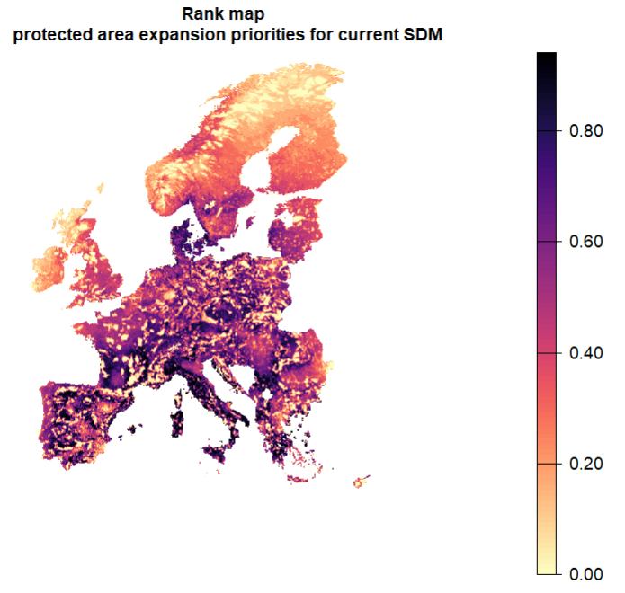

# plot all solutions to compare them
plot(c(s, s1, s3, s3_bis, s4, s5, s6, s7, s8),
main = c("basic problem", "add log linear targets",
"add protected areas", "plan for future distributions" , "add locked-out constraints", "add gHM", "add NVDI",
"binary decision", "change area budget to 10 percent strict PA expansion"),
col = viridisLite::magma(n = 100, direction = -1),
axes = FALSE)7 Compare and analyse different solutions
7.1 Compare spatial outputs
##### map safe bets for expansion priorities across all variations of the problems expanding on protected areas ##
mean_s <- mean(s3, s3_bis, s4, s5, s6, s7)
exp <- mean_s - PA
exp[exp<0]<-0
## Compare this map with the one obtained without considering additions in solutions s4-s7 : how different are they?
plot(c(expansion_climate, exp), col = viridisLite::mako(n = 10, direction = -1), main = c("Average expansion priorities \n for current and future SDM", "Average expansion priorities \n solutions s3 to s7"), axes = F)- 1
- set negative values to zero (these correspond to planning units that were locked out by urban/forestry layer, but that are currently protected)
The influence of input data and methodological choices
In addition, the more features are included, the more the solution converges, hence it is always better to include as many high-quality features data as possible, to increase comprehensiveness of the planning and obtain an ecologically robust solution.
Remember that the solutions are highly dependent on methodological choices, and specifically on the input data (features, costs), constraints, and the objective function used, as well as the software.
For a review on the influence of different types of data and methodological choices in conservation prioritisation, see Kujala et al. (2018)
7.2 Compare performance of solutions
We can compare the performance of solutions for the species by assessing their representation in each solution as well as the target shortfall.
library(ggplot2)
# First we create rasterstack of solutions for which you want to compare performance
# here, we compare the solutions that optimize for current distributions within 30% budget area
solutions <- c(s, s1, s2, s3, s4, s5, s6, s7)
names(solutions) <- c("basic problem", "add log linear targets", "add weights",
"add protected areas", "add locked-out constraints", "add gHM", "add NVDI",
"binary decision" )
## analyse representation gains in the different solutions with a given budget
## for individual species
scenarios_performance_species <- data.frame(solution = character(),
feature = character(),
class = character(),
order = character(),
relative_held = numeric(), ## representation: percentage of distribution held in the solution
relative_shortfall = numeric()) ## shortfall to target: how far from the area target for each species
## loop across solutions to extract representations for species and target shortfall
for (i in 1:nlyr(solutions)){
cat(paste0(i, " \n")) # keep track
rpz.s_i <- eval_target_coverage_summary(p1, solutions[[i]]) ## for each species. Note that here, we assess the target shortfall based on the targets defined in p1, i.e. log linear targets.
rpz.s_i$order <- redlist.trees$order[match(rpz.s_i$feature, redlist.trees$spp_name)]
rpz.s_i$class <- redlist.trees$class[match(rpz.s_i$feature, redlist.trees$spp_name)]
rpz.s_i$solution <- names(solutions)[i]
rpz_i <- as.data.frame(rpz.s_i)
scenarios_performance_species <- rbind(scenarios_performance_species,
rpz_i[, c("solution", "feature", "class","order", "relative_held", "relative_shortfall")]
)
}
scenarios_performance_species$solution <- factor(scenarios_performance_species$solution, levels = names(solutions)) ## to plot solutions in the right order.
## compare performance of different solutions in terms of representation
ggplot(scenarios_performance_species, aes(x = solution, y = relative_held)) +
geom_boxplot()+
theme_bw()# subdivide per groups of species to be more ecologically informative
ggplot(scenarios_performance_species, aes(x = solution, y = relative_held)) +
geom_boxplot(aes(fill = order), alpha = 0.2, outlier.size = 0)+
theme_bw()## group by Class instead of family
## add jitter points to see individual species representations
ggplot(scenarios_performance_species, aes(x = solution, y = relative_held)) +
geom_boxplot(aes(fill = class), alpha = 0.2, outlier.size = 0)+
geom_point(aes(x = solution, y = relative_held, colour = class), position = position_jitterdodge())+
theme_bw()## compare performance of different solutions in terms of target shortfall
ggplot(scenarios_performance_species, aes(x = solution, y = relative_shortfall)) +
geom_boxplot(aes(fill = class), alpha = 0.2, outlier.size = 0)+
geom_point(aes(x = solution, y = relative_shortfall, colour = class), position = position_jitterdodge())+
theme_bw()
Tip
What do these two performance metrics tell us?
7.3 Create a spatial ranking of conservation importance
Sometimes one may be interested in the relative ranking in the conservation value of planning units without a fixed budget. but we can make one by solving iteratively while gradually increasing the area in the solution (i.e. the budget). The average of all solutions can give a ranking of the grid cells in the study area in terms of conservation importance.
Let’s produce a ranking map with increasing the budget. We will build on solution #3 that expands on protected areas for current distributions, but does not include other constraints. We will start with the existing protected area and incrementally add budget until the whole study area is reached. Then, we can average across all solutions to obtain the ranking.
## initialise a raster stack with existing PA to store solutions as budget area increases.
incremental.solutions <- PA
protected.land <- round(sum(PA[PA>0]))
total.land <- sum(PU[PU>0])
steps <- c(seq(from =protected.land, to = total.land, by = 5000 )[-1], total.land-1)
## skip the first as this is the initial PA layer + add the total land amount
## the argument "by" can be decreased for finer ranking.
## Note: this will take a while (1-2 minutes per run)
for (budget.area in steps){
p_i <- problem(PU, spp)%>%
add_min_shortfall_objective(budget = budget.area)%>%
add_relative_targets(1) %>%
add_feature_weights(redlist.trees$weight) %>%
add_manual_bounded_constraints(pa_constraints)%>%
add_cbc_solver()%>%
add_proportion_decisions()
s_i <- solve(p_i)
incremental.solutions <- c(incremental.solutions, s_i)
}
ranking.expansion.priorities <- mean(incremental.solutions) - PA
plot(ranking.expansion.priorities, col = viridisLite::magma(n = 100, direction =-1), axes = F, main = "Rank map \n protected area expansion priorities for current SDM")- 1
- Here we use relative targets of 1 that are equal for all species, such that each species should be fully represented across its entire distribution. This is because the solution only contains the area that is necessary to meet the targets. If all targets are met within an amount of area that is smaller than the budget specified, the budget is ignored.

The question is now, how does feature representation increase with added area? Let’s find out by plotting a performance curve, i.e. representation gains with increasing area, starting from the current representation within protected areas up to the total study area.
#### create representation curves
curves <- as.data.frame(matrix(ncol = 3, nrow = 0))
colnames(curves) <- c("area", "species", "relative_held")
incremental.solutions <- c(incremental.solutions, PU) ## add PU with all grid cells value = 1 for completeness
steps <- c(seq(from =protected.land, to = total.land, by = 5000 ), total.land) ## add current area protected as initial step, and total study area
for (n in 1:nlyr(incremental.solutions)){
rpz_n <- eval_feature_representation_summary(p1, incremental.solutions[[n]])
df_n <- data.frame(area = steps[n],
species = rpz_n$feature,
relative_held = rpz_n$relative_held)
curves <- rbind(curves, df_n)
}
## now plot the curves for each species + the mean
ggplot(data = curves, aes(x = area, y = relative_held, colour = species))+
geom_line(alpha = 0.5) + ## one line per species
stat_summary(fun.y=mean, colour="black", lwd = 0.9, geom="line") + ## plot mean on top in black
scale_colour_discrete(guide = "none")+ ## hide the legend
ylab("proportion distribution held") +
theme_bw()